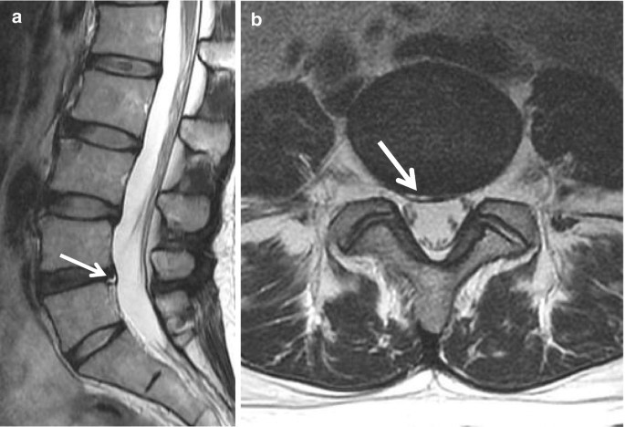

1) Description of Measurement
The High-Intensity Zone (HIZ) is defined as a focal area of increased signal intensity within the posterior annulus fibrosus on T2-weighted MRI that is clearly distinct from the nucleus pulposus. It represents an annular fissure/tear and is strongly associated with discogenic low-back pain, particularly when concordant with patient symptoms.
2) Instructions to Measure
Scroll through the mid-sagittal and parasagittal T2 sequences of the lumbar spine.
Identify a well-defined hyperintense focus located within the posterior annulus fibrosus, separate from the nucleus pulposus.
Confirm the lesion:
Appears on at least two adjacent slices, and
Is brighter than nucleus pulposus on T2-weighted imaging.
Record:
Disc level (e.g., L4–5)
Location (central, right or left posterolateral)
Presence or absence of HIZ (binary variable).
3) Normal vs. Pathologic Ranges
Absent: Normal annulus
Focal T2 hyperintensity in posterior annulus: Annular fissure / HIZ
4) Important References
5) Other info....